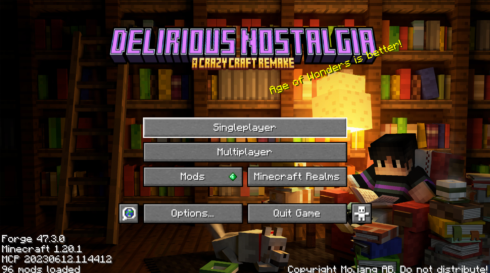

This is my own Crazy Craft Remake for minecraft forge 1.20.1
This modpack is supposed to be as close to the original "Crazy Craft 3" as possible for the more modern versions of minecraft
The Modpack is Currently still in development at the moment and will not be ready for public distribution until Orespawn has been 100% ported to minecraft 1.20.1.
Modpack Downloads (Most Recent Update)